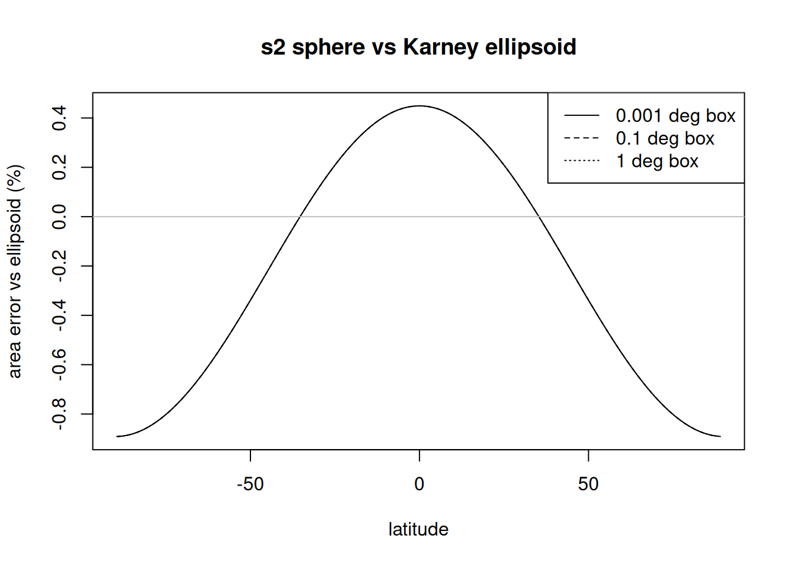

Distance, perimeter and area in sf and terra: which number do you get?
Author
Michael Sumner
Published
September 24, 2026
In May 2025 a question on R-sig-Geo asked why sf::st_perimeter() gave a different answer from sf::st_length(sf::st_boundary()) for the same small land parcel in France, with spherical geometry switched off (thread). There were three different numbers for the perimeter of that parcel, and each of them is correct for a particular model of the Earth and a particular meaning of “edge”. I posted a gist at the time as a start at unpicking them. (In my message on that thread, “sf+longlat-s2 uses Karney” should read “with s2 switched off”.)
The specific inconsistency in st_perimeter() has since been fixed in sf (#2541). What remains is the more general question this post is about: for a given geometry, how does each package decide which model of the Earth to measure on, and can a user predict the answer from the data in front of them?
The short version:
terra decides from the geometry’s coordinate reference system. Longitude and latitude input is always measured on the ellipsoid. Projected input is measured on the ellipsoid for area and cell size (by default), and in the plane for perimeter and distance.
sf decides from the coordinate reference system and a session option, sf_use_s2(). Longitude and latitude input is measured on a sphere when s2 is on (the default) and on the ellipsoid when it is off. Projected input is always measured in the plane. The same option also selects the engine used for predicates and overlay operations.
The rest of the post establishes this with code, and then looks at how large the differences are and where they come from.
Versions
Everything below depends on these versions, and the results should be re-run when they change.
This is the polygon from the thread, as a plain coordinate matrix in Lambert-93 (EPSG:2154, RGF93 on the GRS 1980 ellipsoid). It is about 40 m across. We keep three versions of it: projected, transformed to longitude and latitude (EPSG:4326), and with no CRS at all.
A small helper sets sf_use_s2() for one expression and restores it afterwards.
with_s2 <-function(use, code) { old <-suppressMessages(sf::sf_use_s2(use))on.exit(suppressMessages(sf::sf_use_s2(old)))force(code)}
Three reference numbers
Before calling any sf or terra function, we compute the perimeter and area directly under each of the three models, so that every later result can be labelled by which model it corresponds to.
Planar: each edge is a straight line in the projected coordinates, and lengths and areas are Euclidean in those coordinates.
Ellipsoid: each edge is a geodesic on the WGS84 ellipsoid, computed with Karney’s algorithms (GeographicLib), here via geosphere.
Sphere: each edge is a great circle on a sphere of radius 6371010 m, which is the radius s2 uses.
The perimeter is 129.249 m planar, 129.285 m on the ellipsoid and 129.098 m on the sphere. The area is 1049.65, 1050.24 and 1047.03 square metres respectively.
What each number is
The ellipsoidal length of an edge is the same as its planar length in an azimuthal equidistant projection centred on one of its endpoints, because that projection preserves distance from its centre.
The spherical number is the same geodesic calculation with zero flattening and s2’s radius.
sum(geosphere::distGeo(ll[seg_i, ], ll[seg_i +1, ], a = R_s2, f =0))
[1] 129.09815
The planar number is the ellipsoidal number scaled by the projection. Lambert-93 is conformal, so at a point it has a single scale factor k in every direction. Lengths scale by k and areas by k squared. Measuring k numerically at the parcel reproduces both ratios.
At this location k is 0.999718, so the planar perimeter is 0.028% shorter than the ellipsoidal one and the planar area is 0.056% smaller. An equal-area projection centred on the parcel gives the ellipsoidal area to within about one part in 10^8.
The decision in sf is visible in the source of st_perimeter(). The first branch is taken when sf_use_s2() is TRUE and the geometry is longitude and latitude.
body(sf::st_perimeter)
{
x = st_geometry(x)
if (sf_use_s2() && isTRUE(st_is_longlat(x))) {
if (!requireNamespace("s2", quietly = TRUE))
stop("package s2 required to calculate the perimeter of spherical geometries")
units::set_units(s2::s2_perimeter(x, ...), "m", mode = "standard")
}
else {
if (isTRUE(st_is_longlat(x)))
units::set_units(st_length(st_boundary(x)), "m",
mode = "standard")
else {
if (!requireNamespace("lwgeom", quietly = TRUE))
stop("package lwgeom required, please install it first")
lwgeom::st_perimeter_lwgeom(x)
}
}
}
The sf documentation for st_area() describes the same rule: with longitude and latitude coordinates, area is computed on the ellipsoid with st_geod_area() if sf_use_s2() is FALSE, and on the sphere with s2_area() if it is TRUE; with projected coordinates, area is computed in the plane. st_length() and st_distance() follow the same pattern.
When s2 is off, the longitude and latitude branch of st_perimeter() goes via st_length(st_boundary(x)). It does not call lwgeom’s perimeter, which declines longitude and latitude input:
Warning in lwgeom::st_perimeter(pll): 'lwgeom::st_perimeter' is deprecated.
Use 'sf::st_perimeter or lwgeom::st_perimeter_lwgeom' instead.
See help("Deprecated")
[1] "for perimeter of longlat geometry, cast to LINESTRING and use st_length"
terra
terra has no global option for this. For longitude and latitude input, its documentation states that distances, lengths and areas are computed on the WGS84 ellipsoid with Karney’s algorithms. For projected input, the behaviour differs between functions. expanse() and cellSize() have an argument transform, which defaults to TRUE and computes the result on the ellipsoid. perim() and distance() have no such argument and work in the plane.
## references for the distance rowc(planar =sqrt(sum((xy[2, ] - xy[1, ])^2)), karney = geosphere::distGeo(ll[1, ], ll[2, ]))
planar karney
11.9113601 11.9147186
The area of a nominal 10 m by 10 m cell is 100.056 square metres on the ellipsoid, which is 100 divided by k squared. The distance between the first two vertices is the planar value, 11.911 m, rather than the ellipsoidal 11.915 m.
The grid
Now every combination: four ways of asking for a perimeter, three ways of asking for an area, three versions of the polygon, and sf_use_s2() on and off. Each result is labelled by the reference number it matches.
The three sf routes to a perimeter now agree with each other in every case, which was not true at the time of the original thread. With projected input, or no CRS, everything in sf is planar. With longitude and latitude input, sf gives the spherical number when s2 is on and the ellipsoidal number when it is off.
terra does not read sf_use_s2(), so its rows are the same in both halves of each table. With longitude and latitude input it gives the ellipsoidal number for both perimeter and area. With projected input, perim() is planar and expanse() is ellipsoidal. With no CRS, terra computes in the plane and warns that the results may be wrong.
For longitude and latitude data, which is the common case for data arriving from files and web services, the two packages with their default settings give different answers: sf gives 129.098 m and 1047.03 square metres, terra gives 129.285 m and 1050.24 square metres.
One option, two roles
In sf, sf_use_s2() selects the model for measures and also the engine for predicates and overlays. With s2 off, longitude and latitude geometries go to GEOS, which treats the coordinates as planar. Measures, however, go to GeographicLib on the ellipsoid, where each edge is a geodesic. So within one session with s2 off, the same polygon has ellipsoidal geodesic edges for the purpose of its area and straight edges in longitude and latitude for the purpose of point-in-polygon.
This matters for wide polygons at high latitude. A geodesic between two points at the same latitude does not follow the parallel; it bends toward the pole. Here is a box 120 degrees wide between 70 and 60 degrees south, and a point just inside its northern edge.
although coordinates are longitude/latitude, st_intersects assumes that they
are planar
$area
3.027757e+12 [m^2]
$intersects
[1] TRUE
With s2 on, the area is spherical and the point is outside the polygon, which is consistent: on the sphere the northern edge passes south of 62 degrees south at longitude 0. With s2 off, the area is ellipsoidal, which is the more accurate model, but the point is now inside the polygon, because GEOS treats the northern edge as the straight line at 60 degrees south. A user who switches s2 off to obtain ellipsoidal measures therefore also changes the answers to spatial predicates, and the measures and predicates no longer describe the same polygon.
Point distance and two spheres
For a single pair of points (the first two vertices of the parcel) there is a fourth number.
sf with s2 off, terra’s default method, geodist and geosphere all agree on the ellipsoidal distance. sf with s2 on gives the spherical distance. terra’s method = "haversine" gives a third value, because it uses a sphere with the equatorial radius of WGS84 rather than s2’s mean radius:
c(terra_hav = terra::distance(a, b, lonlat =TRUE, method ="haversine"),hav_equatorial = geosphere::distHaversine(a, b, r =6378137),hav_mean_s2 = geosphere::distHaversine(a, b, r = R_s2))
The two spheres differ in radius by a factor of 1.0011, so “spherical distance” is itself not one number.
How large is the difference, and where?
For a 40 m parcel the differences are centimetres. It is tempting to conclude that the choice of model only matters for large polygons. For the sphere against the ellipsoid, that is not the case: the relative error in area is set by latitude and is essentially the same for a box one metre across and a box one degree across.
plot(sw$lat, 100* sw$s2, type ="n", xlab ="latitude",ylab ="area error vs ellipsoid (%)", main ="s2 sphere vs Karney ellipsoid")sizes <-unique(sw$size)for (s in sizes) { d <- sw[sw$size == s, ]lines(d$lat, 100* d$s2, lty =match(s, sizes))}abline(h =0, col ="grey")legend("topright", legend =paste(sizes, "deg box"), lty =seq_along(sizes))

Relative error of s2 spherical area against Karney ellipsoidal area, by latitude, for square boxes of three sizes. The three curves coincide.
The spherical area is 0.45% too large at the equator, correct near 35 degrees north and south, and 0.89% too small near the poles. At the latitudes of the Southern Ocean and Antarctica the spherical area is consistently between 0.5% and 0.9% smaller than the ellipsoidal area, regardless of the size of the polygon. terra agrees with Karney to within floating point precision throughout, since it uses the same library.
Planar error behaves differently: it depends on the projection’s scale factor over the polygon, which for a well-chosen local projection is small for small polygons and grows with distance from the projection’s centre or standard lines.
What is an edge?
All of the above assumes that everyone agrees on what the polygon is. The coordinates alone do not determine that. Between two vertices, an edge could be a geodesic on the ellipsoid, a great circle on the sphere, a straight line in some projection, or a line of constant latitude. For small polygons these coincide closely. For large ones they do not.
Here is a box 10 degrees on each side at 60 degrees south, first with only its four corners, then densified at 0.1 degree spacing along its edges in longitude and latitude so that the northern and southern edges follow the parallels.
The two versions differ in area by 0.25%, which is of the same order as the difference between the sphere and the ellipsoid at this latitude. terra and Karney agree on each version, so both treat the edges as geodesics and neither densifies implicitly.
The same question applies to terra’s transform = TRUE for projected polygons. The vertices are transformed to longitude and latitude and the edges are then treated as geodesics. An edge that is straight in the projection is not a geodesic, so for large polygons the result is the ellipsoidal area of a slightly different polygon. Densifying in the projected coordinates before measuring removes this.
Summary
input
sf, s2 on (default)
sf, s2 off
terra
longitude/latitude, length and perimeter
sphere
ellipsoid
ellipsoid
longitude/latitude, area
sphere
ellipsoid
ellipsoid
projected, length and perimeter
planar
planar
planar
projected, area
planar
planar
ellipsoid (transform = FALSE for planar)
no CRS
planar
planar
planar, with a warning
For longitude and latitude data, terra’s rule can be stated in one line: it always measures on the ellipsoid. sf’s answer depends on an option that is set per session, is on by default, and also determines how predicates and overlays are computed. The consequence is that an sf user who wants ellipsoidal measures has to change the behaviour of their spatial predicates as well, and a user who leaves the default gets a spherical measure whose error varies from +0.45% to -0.89% with latitude, independent of the size of the feature.
Two changes would make each package’s rule simpler to state. In sf, a way to select the ellipsoid for measures independently of the engine used for predicates, for example an argument to the measure functions or a separate option. In terra, extending the transform argument to perim() and distance(), so that projected input is measured on the ellipsoid for every quantity whenever the CRS is known, as it already is for area.
In the meantime, the grid above can be run against any installed versions, and is a quick way to check which number a given function returns.